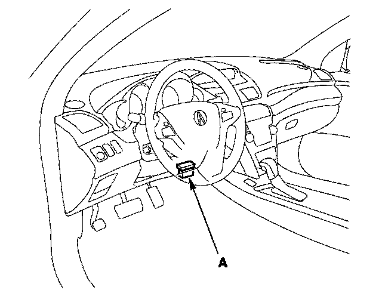

SH-AWD Differential Clutch Torque Memorization
SH-AWD Differential Clutch Torque MemorizationWhenever the side clutch set is replaced, the differential clutch torque memorization must be done.
1. With the ignition switch OFF, connect the HDS to the 16P DLC (A) behind the driver's dashboard lower cover.

2. Turn the ignition switch ON (II) go to the miscellaneous test menu/neutral menu/differential torque and follow the prompts on the HDS screen.
NOTE: See the HDS help menu for specific instructions.